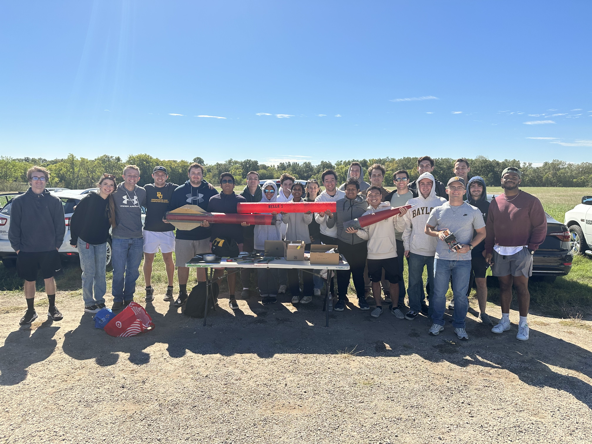
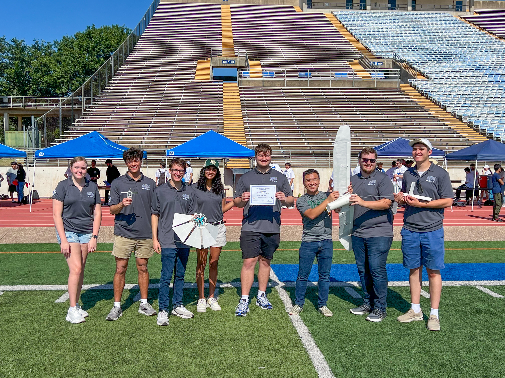
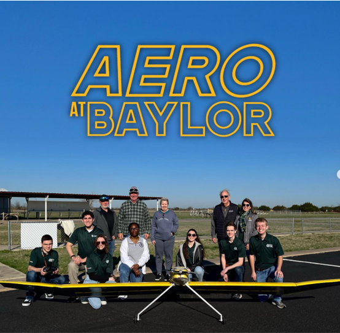
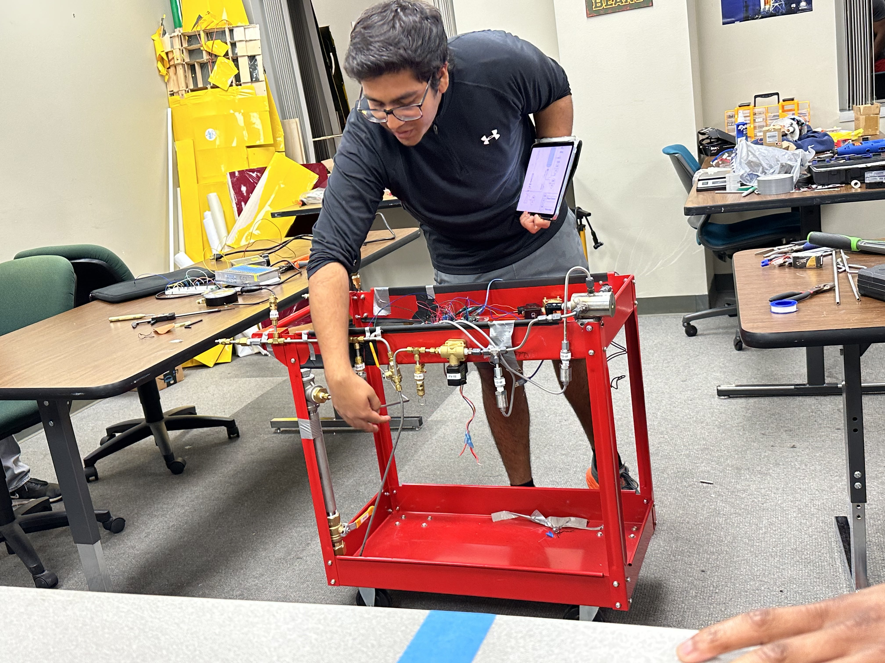

AERO AT BAYLOR

Aero at Baylor is a student-led organization that provides students with accelerated hands-on experiences with various aerospace projects. The club competes annually in 3D Printed Aircraft Competition at UTA, in which students gain an understanding of aeronautics and RC electronics through the construction of aircraft. We also compete in IREC (Intercollegiate Rocket Engineering Competition) at Spaceport America. In addition to aerospace projects, Aero provides career-boosting opportunities for students like skill-learning workshops and networking events. We invite anyone interested in what our club has to offer to join and get involved!

The IREC (Intercollegiate Rocket Engineering Competition) team is focused on designing and building rockets to compete in the national IREC competition. This team challenges students to apply their skills in aerospace engineering, propulsion, and structural design to achieve high-altitude launches. We competed for the first time last year and are looking to go back this year!

The 3D Printed Aircraft team works on designing and building fully functional aircraft using advanced 3D printing technology. This team pushes the boundaries of manufacturing techniques and aerospace design by integrating rapid prototyping with traditional aerospace engineering methods. They compete yearly at the UT Arlington 3D-Printed Aircraft Competition. Our team has won 1st place 3 years in a row!

The SAE Aero team participates in the annual SAE Aero Design competition, where teams are tasked with designing, building, and testing aircraft to meet specific mission criteria. This team hones their skills in aircraft design, materials science, and flight performance while competing against universities worldwide. This year our team is competing in the micro class.

The Baylor Liquid Propulsion Team focuses on developing rocket propulsion systems, specifically liquid rocket engines. This team engages in the research, design, and testing of propulsion systems to provide cutting-edge performance for the club’s rockets and future space missions.
Our sponsors help us achieve our goals. Thank you for your support!

President: Jonathan Gildehaus
Email: Jonathan_Gildehaus1@baylor.edu
Instagram: @aero_at_baylor
Advisor: Dr. Anne Spence